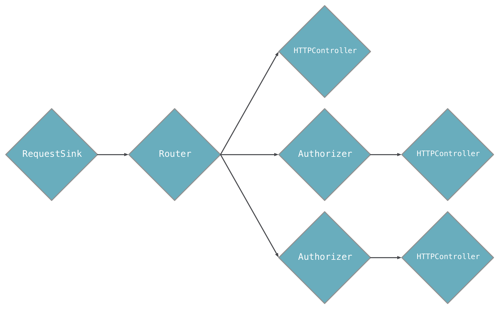

Aqueduct Application Architecture
The purpose of this document is to understand the objects that comprise an Aqueduct application, and how they work with one another to serve HTTP requests. It also discusses the project structure on the filesystem.
Controllers are Building Blocks
The building blocks of an Aqueduct application are Controllers. Each controller type has logic to handle an HTTP request in some way. Controllers are linked together to form a channel; an ordered series of controllers. A channel is a composition of its controllers' behaviors.
For example, consider an Authorizer controller that verifies the request's authorization credentials are correct, and a SecretController that sends a response with secret information. By composing these two controllers together, we have a channel that verifies credentials before sending a secret. The benefit of controllers and channels is that controllers can be reused in multiple channels; the Authorizer can protect other types of controllers without any change to its logic.

The last controller in a channel must always respond to a request. These types of controllers are called endpoint controllers and implement the business logic for your application's endpoints. For example, an endpoint controller might fetch a list of books from a database and send them in a response.
The other controllers in a channel are called middleware controllers. These types of controllers typically verify something about a request before letting the next controller in the channel handle it. Middleware controllers can respond to a request, but doing so prevents the rest of the controllers in the channel from handling the request.
For example, an "authorization" controller could send a 401 Unauthorized response protecting the endpoint controller from unauthorized requests. A "caching" controller could send a response with information from a cache, preventing the endpoint controller from performing an expensive query.
Both middleware and endpoint controllers are instances of Controller (or a subclass). Middleware controllers are typically reusable, while endpoint controllers are typically not. If a middleware controller is not reusable, its logic might be better suited for the endpoint controller it precedes in the channel.
Most endpoint controllers are created by subclassing ResourceController (itself a subclass of Controller). This class allows you to implement methods for each HTTP method (like GET or POST) for a given endpoint.
The Application Channel and Entry Point
Each application designates one controller as the entry point of the application. This controller is the first to receive a new request and is the head of the application's channel. In most applications, the entry point is a Router; this controller allows multiple channels to be linked, effectively splitting the channel into sub-channels.

The diagram above looks like this in code:
class AppChannel extends ApplicationChannel { @override Controller get entry { final router = new Router(); router .route("/a") .link(() => new AController()); router .route("/b") .link(() => new Authorizer(...)) .link(() => new BController()); router .route("/c") .link(() => new Authorizer(...)) .link(() => new CController()); return router; } }
See this guide for more details on the application channel and entry point.
Aqueduct Project Structure and Organization
An Aqueduct project is a directory that contains, at minimum, the following file structure:
pubspec.yaml lib/ application_name.dart
The name of any Dart application is defined by the name key in pubspec.yaml. In order for aqueduct serve to run your application, there must be a .dart file in lib/ with that same name. This is your application library file and it must declare a ApplicationChannel subclass or import a file that does. This is the bare minimum requirement to run an Aqueduct application. (See Deploying for more details on running applications.)
For organizing applications of reasonable size, we recommend the following structure:
pubspec.yaml
config.src.yaml
config.yaml
lib/
application_name.dart
channel.dart
controller/
user_controller.dart
model/
user.dart
test/
user_controller_test.dart
harness/
app.dart
The required pubspec.yaml and lib/application_name.dart files are present alongside a few others:
config.yaml: A configuration file for the running application.config.src.yaml: A template for config.yaml.channel.dart: A file solely for theApplicationChannelof an application. This file should be exported fromapplication_name.dart.controller/: A directory forControllersubclass files.model/: A directory forManagedObject<T>subclass files.test/harness/app.dart: A test harness) for automated testing.
Feel free to create other subdirectories in lib/ for organizing other types of files.
Aqueduct and dart:io
Aqueduct runs on top of dart:io and relies on its HttpServer implementation. When an Aqueduct application is started, one or more HttpServer instances are bound to the port specified by aqueduct serve. For each HTTP request, an instance of Request is created to wrap the HttpRequest from dart:io. The Request is added to a ApplicationChannel, sending it through the channel of Controllers until it is responded to.
In rare circumstances, you may choose to remove a Request from the application channel and manipulate the request with dart:io only. Once removed, it is your responsibility to respond to the request by setting properties on and closing the HttpRequest.response. To take a request out of the channel, simply return null from a Controller:
@override Controller get entryPoint { final router = new Router(); router .route("/bypass_aqueduct") .linkFunction((req) async { req.response.statusCode = 200; req.response.close(); return null; }); return router; }
This technique is valuable when Aqueduct can't do something you want it to do or when using websockets.